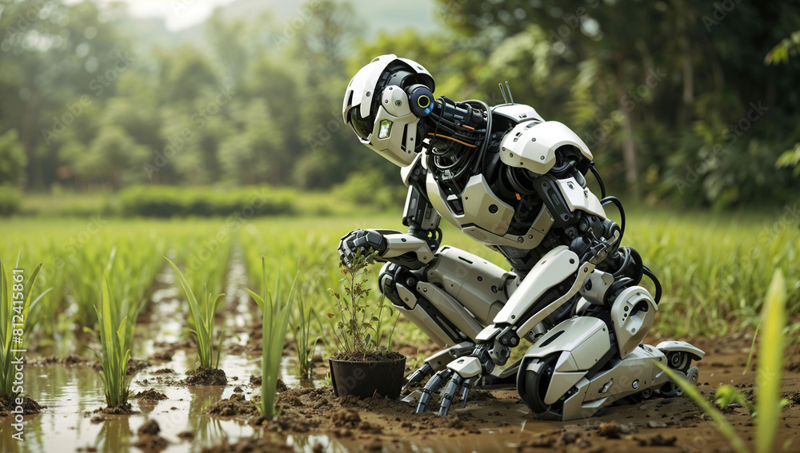

AI-Powered Cybersecurity: Defending Against the Next Generation of Threats
Artificial Intelligence (AI) is transforming agriculture, paving the way for smarter, more sustainable farming practices. This article explores how AI is being integrated into modern agriculture, from precision farming and crop monitoring to automated machinery and predictive analytics. It discusses how AI-powered technologies are improving crop yields, reducing resource usage, and enabling farmers to make data-driven decisions. The article also addresses the challenges of AI adoption in agriculture, including the need for infrastructure, data management, and the potential impact on small-scale farmers. It concludes with insights into how AI could shape the future of food production and security.
Introduction
Agriculture has always been a cornerstone of human civilization, but the challenges facing modern farming—such as climate change, resource scarcity, and a growing global population—require innovative solutions. Enter Artificial Intelligence (AI), a technology poised to revolutionize agriculture by making farming smarter, more efficient, and sustainable. This article explores how AI is transforming the agricultural landscape and its potential to reshape the future of farming.
Precision Farming
Precision farming, powered by AI, is at the forefront of agricultural innovation. By utilizing sensors, drones, and satellite imagery, AI algorithms can analyze vast amounts of data to optimize farming practices. These technologies help farmers monitor crop health, soil conditions, and weather patterns with unprecedented accuracy. For example, AI-powered drones can identify areas of a field that need attention, enabling targeted interventions such as precise irrigation and fertilization. This not only improves crop yields but also reduces waste and environmental impact.
Predictive Analytics
AI-driven predictive analytics play a crucial role in forecasting crop yields, pest outbreaks, and disease. Machine learning models analyze historical data, current weather conditions, and other variables to predict future trends. This allows farmers to anticipate issues before they arise and make informed decisions about planting, harvesting, and resource management. For instance, AI can predict the likelihood of a pest infestation, enabling farmers to take preventive measures and minimize crop damage.
Automation and Robotics
The integration of AI in agriculture extends to automation and robotics, which are transforming labor-intensive tasks. Autonomous tractors, harvesters, and planting machines are becoming increasingly common, reducing the need for manual labor and increasing efficiency. These robots can work around the clock, performing tasks with precision and consistency. AI also enables these machines to adapt to varying field conditions and make real-time adjustments, further enhancing their effectiveness.
Sustainability and Resource Management
AI contributes significantly to sustainable farming practices by optimizing resource use. Water scarcity is a major concern in agriculture, and AI helps address this by implementing smart irrigation systems that adjust water usage based on real-time data. Additionally, AI can analyze soil health and recommend appropriate crop rotations and soil treatments, reducing the need for chemical inputs and promoting soil conservation.
Challenges and Future Outlook
Despite its potential, the adoption of AI in agriculture faces several challenges. These include the high cost of technology, data privacy concerns, and the need for technical expertise. Additionally, there is a risk of increasing the digital divide between large-scale farms and smallholder farmers. To overcome these challenges, it is crucial to invest in affordable technology, provide training, and ensure equitable access to AI tools.
Looking ahead, the future of AI in agriculture is promising. As technology continues to advance, AI will play a central role in creating a more efficient, sustainable, and resilient food system. By harnessing the power of AI, we can address the pressing challenges of modern agriculture and build a more secure and sustainable future for food production.